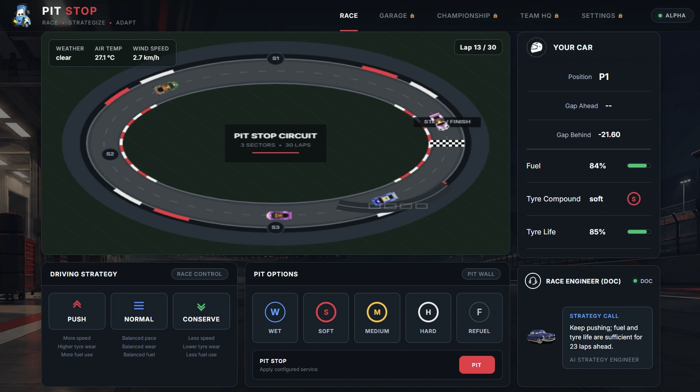
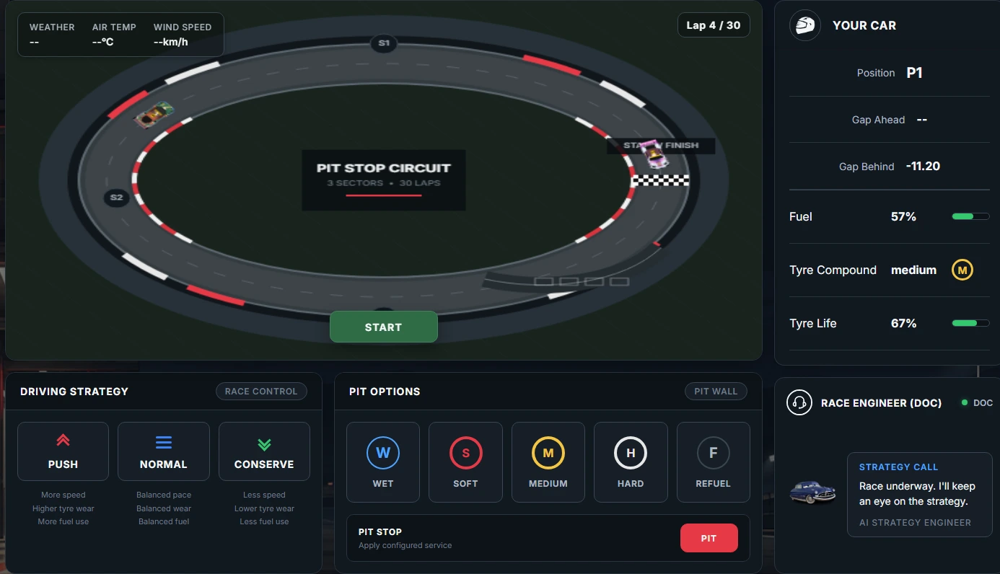
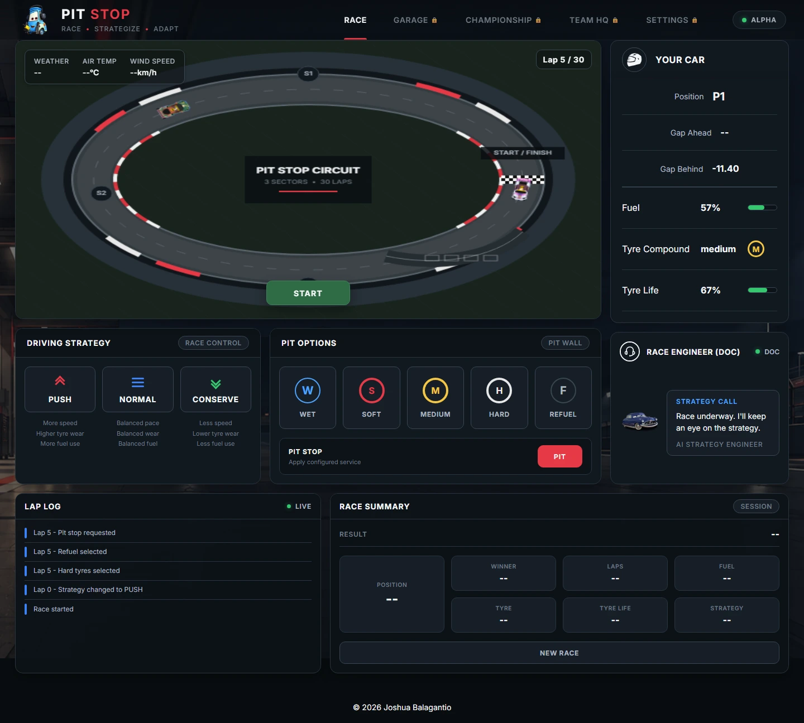
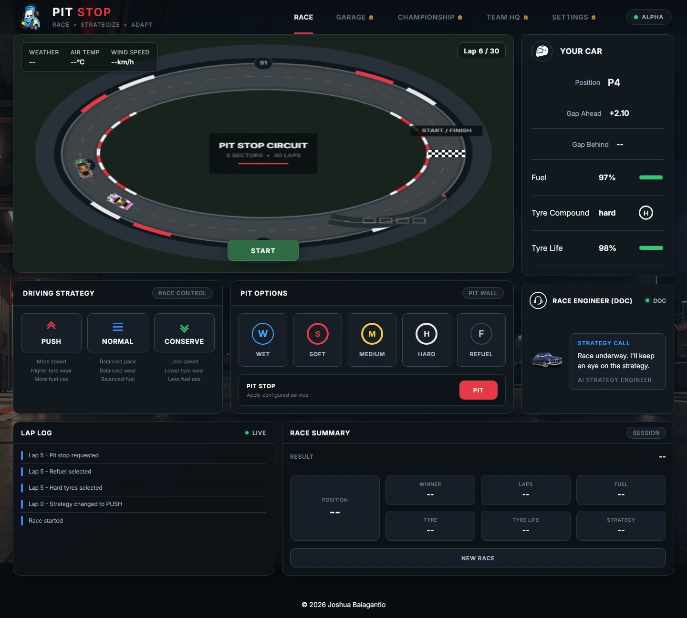
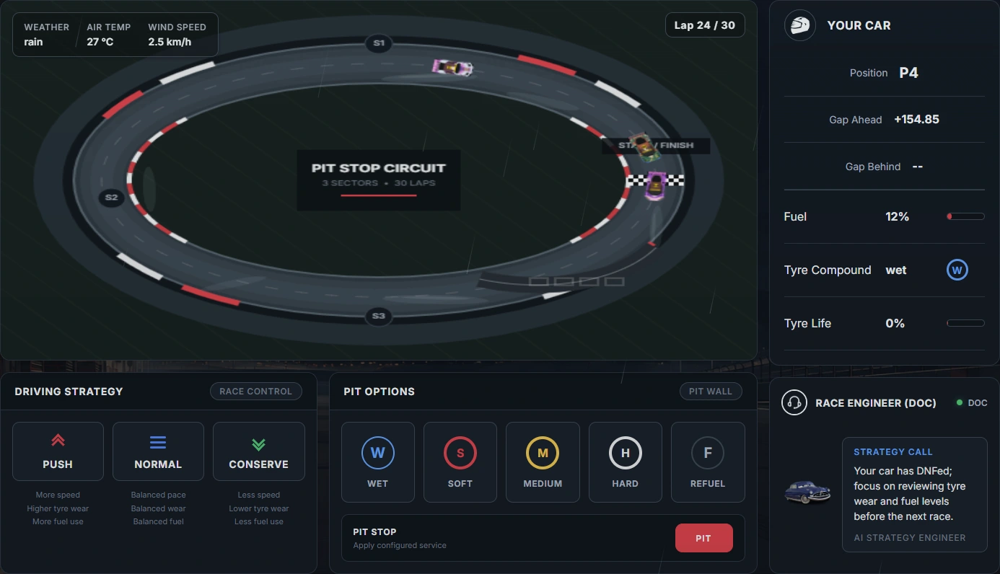
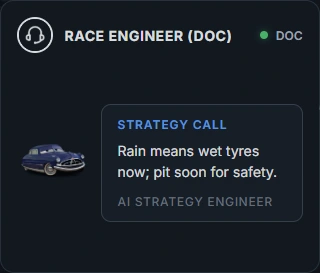
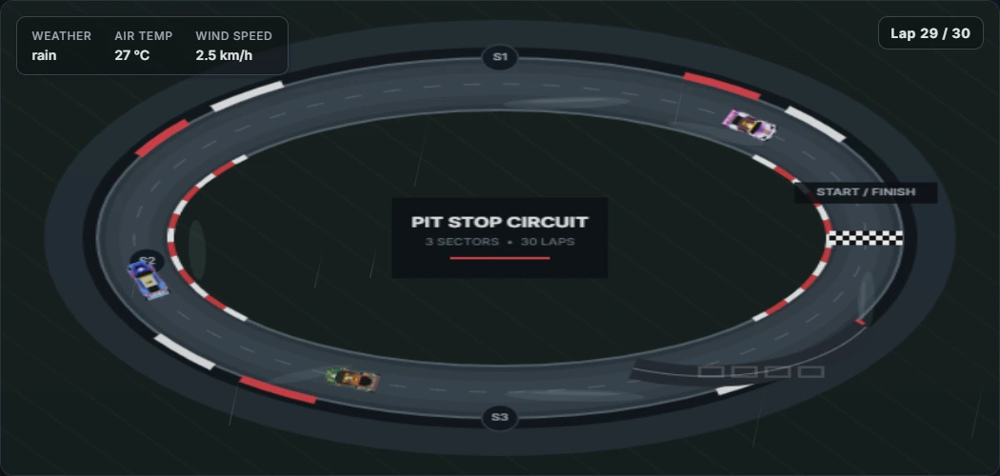

Frontend engineering / Personal project
PIT STOP
Building an interactive race strategy simulator with JavaScript
Win the race from the pit wall. PIT STOP is a browser-based motorsport simulator where pace, tyres, fuel, and pit decisions shape a 30-lap race against three computer-controlled opponents.

01 / The challenge
Making multiple systems work together
I wanted to build an application where decisions influence what happens next, and the interface reflects the changing simulation. PIT STOP began as a bootcamp JavaScript project and grew into a race management experience.
The central challenge is connecting systems: pushing increases pace but consumes more fuel and tyre life; worn tyres reduce speed; a pit stop restores resources but stops the car. The interface needs to make those consequences understandable while the race continues.
02 / Building the simulation
One race state, several responsibilities
The current application uses native JavaScript modules. state.js exports shared race, weather, and car objects. main.js connects controls to the engine, schedules simulation updates, and calls the presentation functions.
A recursive setTimeout schedules the next simulation step after 200 milliseconds. For each eligible car, race.js updates progress, checks laps and the winner, and applies tyre wear and fuel consumption. The same car objects then supply rankings, telemetry, and Canvas positions.
A lap is 30 simulation distance units. Rankings compare completed laps plus distance within the current lap, using a selection sort over a copy of the four-car array. The displayed gaps are distance differences, not measured time gaps. The first car checked at 30 completed laps becomes the winner; the summary orders the field by progress at that point.

03 / Strategy and consequences
Faster now, fewer resources later
Push, Normal, and Conserve map to three pace modes. Soft, medium, hard, and wet tyres have different speed or wear effects. Fuel exhaustion and tyre failure mark a car as DNF and exclude it from subsequent engine updates.
For a concrete example, Push uses a base speed of 2.2 distance units and consumes 0.65 fuel units per update; Normal uses 2 and 0.50. Push also starts with greater tyre wear. Compound, wear level, and weather then modify the outcome. These are simplified game rules rather than a physical vehicle model.
Tyre selection queues a service; it does not immediately replace the tyres. A pit request takes effect when the car crosses a lap boundary. The car stops while requested services run: refuelling takes one second and tyre replacement takes two seconds. When both are requested, they run concurrently and the release checks wait for both.


04 / Weather
Integrating real-world weather into race strategy
PIT STOP uses the Open-Meteo API to retrieve current weather conditions based on the player's location. The application translates that information into clear, wet, or rainy race conditions that influence vehicle performance and tyre wear throughout the simulation.
This integration connects external data with the game's internal racing mechanics, making real-world weather relevant to strategic decisions rather than simply displaying it as background information. Rain or showers map to rain; other precipitation maps to wet; otherwise the track is clear. Temperature and wind appear in the interface.
In rain, dry tyres lose more speed and wear faster; wet tyres avoid the dry-tyre speed penalty. Canvas track appearance and the HTML rain overlay also respond to the condition.
Weather is retrieved once during application initialization. It is not continuously refreshed during a race, and the simulation does not generate internal weather transitions. A failed weather request sets clear conditions with an unavailable temperature. Location denial or geolocation errors only log a message, leaving the initial weather state unset; that path still needs a visible fallback.

05 / The AI race engineer
Context for advice and opponent decisions
Doc sends a race snapshot to Groq's chat completions endpoint using openai/gpt-oss-20b. The snapshot includes weather and each car's progress, resources, strategy, and pit state. A JSON schema requests separate decisions for the three opponents and a short message for the player.
The integration uses Sekyord as an access layer before requesting Groq decisions. Local integration testing requires an authorized origin; the manually captured Doc responses show the feature running in the working application.
The engine calls the decision cycle without awaiting it, allowing the simulation to continue. AI requests are gated by an in-flight flag and a five-second cooldown, with triggers at five-lap intervals or important resource events. Doc also detects a change from the initial unset weather condition when weather loading completes; this does not request new weather data or generate weather transitions.
The response changes opponent pace and queues pit services through existing engine functions. For the player, it is advice displayed as text; it does not operate the player's controls. If a request fails, no new decision is applied. Independent safety checks still make opponents conserve and request service at critical fuel or tyre levels.

06 / Visualizing the race
Two clocks, one source of progress
The Canvas renderer draws the oval circuit, kerbs, sector markers, pit lane, start line, weather effects, and four car sprites. Telemetry, strategy controls, logs, and engineer messages are ordinary HTML.
Rendering runs through requestAnimationFrame, separately from the 200 ms simulation steps. Each step stores previous and current total progress. The renderer uses performance.now() to interpolate between them, wraps the result around the lap, and maps it to an ellipse with a rotation following its tangent.
This avoids making visible movement depend solely on coarse engine updates. It remains a schematic view: cars follow the oval, and the drawn pit lane is not a separate simulated route.

07 / Engineering decisions
Keeping the connected systems manageable
Keeping rendering separate from race calculations
A coarse simulation tick would produce visible jumps if drawn directly. The renderer keeps two position snapshots and interpolates between them while the engine owns actual progress. This gives presentation its own timing without changing race calculations. The interval remains hard-coded to 200 ms in both modules, so a timing change must keep them aligned.
Coordinating asynchronous pit services
Fuel and tyre service finish at different times. Request and completion flags let releaseCar check that every requested service is finished before releasing a car. The remaining edge case is a pit request with no service selected: no timer runs to release that car. Pending service timers also have no cancellation mechanism when a race resets.
Keeping external decisions outside the simulation clock
AI latency should not pause a race. The non-blocking decision cycle, cooldown, and local opponent safety checks let core updates continue without a successful response. The remaining trade-off is stale context: there is no session identifier or post-response race-state check to reject a decision that returns after a reset or finish.
Current implementation limits
The current Alpha reset clears Doc's decision state and request timestamp while keeping its five-second cooldown constant. Race reset restores the cars, visual positions, warning flags, summary, and Start button. Pending pit services and AI responses still require care across race boundaries, as described above.
The local implementation matches the canonical Alpha source checked for this case study. This source comparison does not establish deployed-demo parity, integration reliability, user metrics, or measured performance gains.
08 / What I learned
Building beyond isolated interactions
PIT STOP helped me think about frontend applications as connected systems. A control is only useful when its change reaches the simulation, the visual display, and the information a player uses to decide what to do next.
Working with Canvas and external services also made timing and failure behavior part of the design. Separating responsibilities into modules makes those relationships easier to inspect, while the remaining edge cases show why reset handling, asynchronous boundaries, and visible fallbacks deserve the same attention as adding features.
Explore the project
From the interface to the engine
Try the pit-wall experience, or explore the JavaScript behind its race rules and presentation.